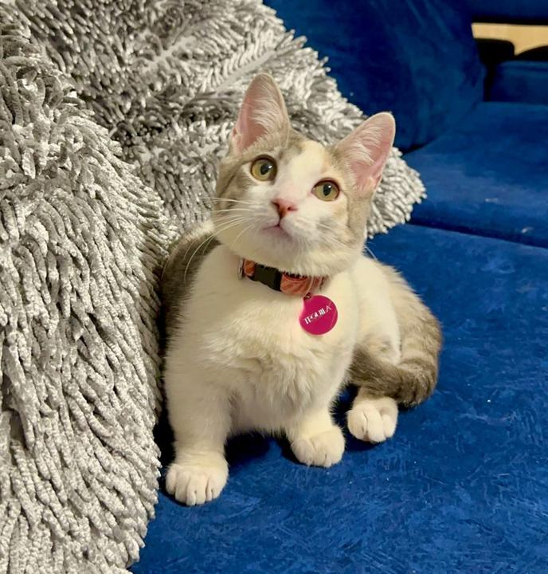

Gato Munchkin en Medellín y Colombia
El Munchkin es la raza enana más conocida: cuerpo de tamaño normal y patas cortas. Esta guía resume cómo es, qué cuidados pide y qué conviene preguntar antes de decidir.

Fotografía de uno de nuestros gatitos.
¿Qué es el Munchkin?
El Munchkin es una raza de gatos de patas cortas. Su rasgo principal viene de una variante genética natural que acorta los huesos largos de las patas, mientras que el cuerpo es de tamaño normal. Se originó en Estados Unidos en los años 80. No todas las organizaciones felinas reconocen la raza.
- Origen
- Estados Unidos, años 80
- Pelaje
- Corto o semilargo, en muchos colores
- Carácter (según nuestra experiencia)
- Tierno, muy apegado a su familia, algo más activo y juguetón
- Cuidados
- Cepillado semanal; se adapta bien a apartamentos
Cuidados
El pelaje corto o semilargo se cuida con un cepillado semanal. Es un gato de interior que se adapta bien a espacios pequeños, pero necesita juego diario y compañía. Ofrecerle escalones o rampas puede ayudarle a subir a sitios altos.
Salud: lo que debes saber
Por su genética, los gatos de patas cortas tienen cuidados particulares. Algunos veterinarios y organizaciones felinas cuestionan la cría de gatos con este rasgo por posibles problemas de columna y articulaciones, como lordosis o artrosis. No todos los gatos los presentan y la información científica disponible es limitada. Por eso conviene pedir datos de salud concretos de cada gatito y consultar a un veterinario de confianza antes de reservar.
Qué preguntar antes de reservar
- Qué información de salud existe del gatito y de sus padres.
- Qué vacunas y desparasitación tiene y qué revisión veterinaria se le hizo.
- Qué cubre exactamente la garantía y si consta por escrito.
- Qué documento de raza se entrega y quién lo emite.
Precio y proceso de adquisición
Los gatos enanos tienen un valor de referencia de entre $3.500.000 y $6.500.000 pesos colombianos, según la raza, el gatito y su línea genética. El valor final te lo confirmamos por WhatsApp o llamada. Entregamos en Colombia y orientamos los trámites de envío al exterior. Ver cómo adquirir tu gatito.
Preguntar por Munchkin en WhatsApp